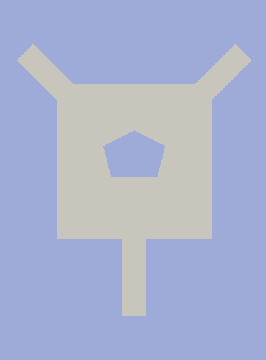
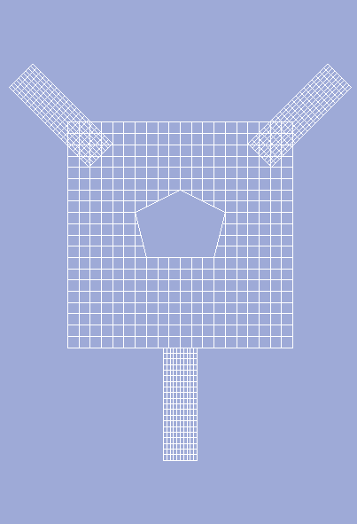
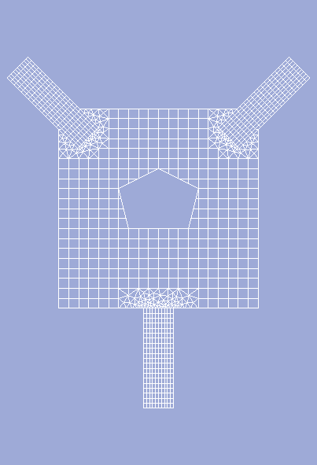
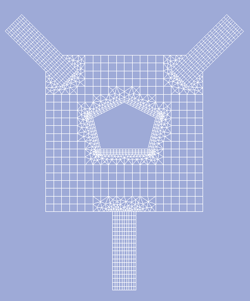

Example 1¶
This example illustrates usage of HybMesh algorithm for meshing domain shown in fig1. Meshing area

{kind=link}
fig1. Meshing area
The building strategy is:
- build a set of primitive rectangular grids
- exclude pentagon (fig2. Primitive grids)
- unite all grids (fig3. Superposition)
- build a boundary grid and unite it with the previous result (fig4. Final result)
Here is the script:
from hybmeshpack import hmscript as hm
hm.check_compatibility('0.5.0')
# create a substrate 20x20 square grid
sqr = hm.add_unf_rect_grid([0, 0], [1, 1], 20, 20)
# create tube grids
# 1) create a prototype
tube_proto = hm.add_unf_rect_grid([0, 0], [0.15, 0.5], 10, 20)
# 2) copy, replace and rotate to build left, right, bottom tubes.
[tube_left, tube_right, tube_bot] = hm.copy_geom([tube_proto] * 3)
hm.move_geom([tube_left, tube_right], 0.425, 1.0)
hm.move_geom([tube_bot], 0.425, -0.5)
hm.rotate_geom([tube_left], -45, [0.5, 0.5])
hm.rotate_geom([tube_right], 45, [0.5, 0.5])
# exclude pentagon from base grid
cont5 = hm.create_contour([[0.3, 0.6], [0.35, 0.4], [0.65, 0.4],
[0.7, 0.6], [0.5, 0.7], [0.3, 0.6]])
exsqr = hm.exclude_contours(sqr, [cont5], "inner")
# ******* see fig2
# make series of grid superpositions with defined buffer sizes
imposed = hm.unite_grids(exsqr, [(tube_left, 0.05),
(tube_right, 0.05),
(tube_bot, 0.1)])
# ******* see fig3
# create a boundary grid prototype around the pentagon.
# 1) make partition of pentagon contour with constant step
cont5 = hm.partition_contour(cont5, "const", 0.02)
# 2) call build_boundary_grid1 procedure with explicitly defined perpendecular segmentation.
bnd1 = hm.build_boundary_grid1(cont5, [0, 0.01, 0.02, 0.03], "right")
# make final superposition
res = hm.unite_grids(imposed, [(bnd1, 0.05)])
# ******* see fig4
# now we can see the result in paraview
hm.export_grid_vtk(res, "pentagon.vtk")

fig2. Primitive grids |

fig3. Superposition |

fig4. Final result |
{kind=link}
{kind=link}
{kind=link}